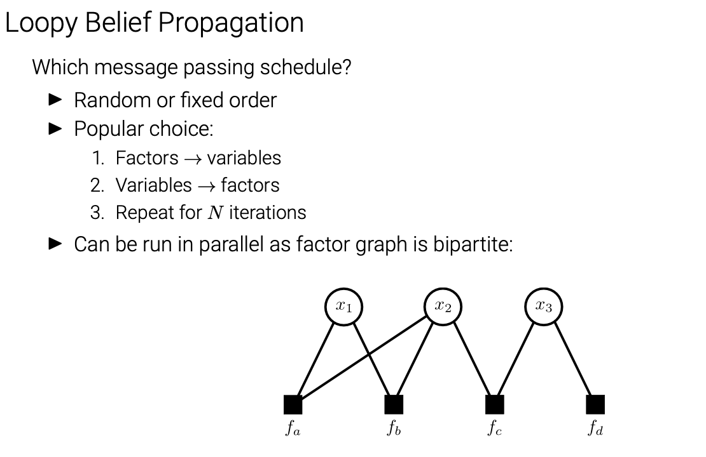

Probabilistic Graphical Models¶
Structured Prediction¶
Spatial regularization¶
\(p(D)\propto e^{-\sum_i\phi_{data}(d_i)-\lambda\sum_{(i，j)\in S}\phi_{smooth}(d_i,d_j)}\)
- i~j neighbouring pixels (on a 4-connected grid).
- $\phi_{smooth} $ is a regularization term that encourages neighboring pixels to have similar disparities.
\(\phi_{data}(di) =min(|I(xi, yi) - J(xi - di, yi)|, σ)\)
\(\phi_{smooth} (di,dj) = min(|di - dj|,τ)\)
where\(I\)and \(J\) are the image pairs
\(σ\) and \(τ\) are truncation thresholds.
- Structured Prediction:
Probabilistic graphical models encode local dependencies of the problem
Deep neural netwoks with image-based outputs (stereo, flow, semantics)
Markov Random Fields¶
Undirected graphical models (UGM)¶
- Pairwise (non-causal) relationships
- Can write down model, and score specific configurations of the graph, but no explicit way to generate samples
- Contingency constrains on node configurations
cliques¶
Refers to fully connected subgraphs in a graphical model, particularly in models like Markov Random Fields or Conditional Random Fields.
In this context, a clique is a group of nodes in a graph where every pair of nodes is directly connected.
potential¶
- A potential \(φ(x)\)is a non-negative function of the variable x
- A joint potential \(φ(x1, x2, . . . )\) is a non-negative function of a set of variables.
Definations of an undirected graphical model¶
\((P(x_1……x_n)=\frac{1}{Z}\prod_{c\in C}\phi_c(x_c)\)
\((Z = \sum_{x_1……x_n}\prod_{c\in C}\phi_c(x_c)\)
Defination of Markov Random Field¶
- For a set of variables \(X ={x_1,...,x_M}\), a Markov Random Field is defined as a product of potentials over the (maximal) cliques \({(X_k)}_{k=1}^K\)of the undirected graph G
\(p(X)=\frac{1}{Z}\prod_{k=1}^K\phi_k(X_k)\)
- \(Z\) normalizes the distribution and is called partition function
- Examples：
Properties¶
\(Condition \ One\)

Marginalizing over c makes a and b dependent¶
\(Proof\)


- Explain:take \(\sum_c\phi_1(a,c)\phi_2(b,c)\) for example
| a | b | c | φ1(a,c) | φ2(b,c) | φ1(a,c)*φ2(b,c) | sum |
| 0 | 0 | 0 | 1 | 1 | 1 | 1 |
| 1 | 0 | 0 | 0 | |||
| 1 | 1 | 0 | 0 | 0 | 0 | 1 |
| 1 | 1 | 1 | 1 | |||
| 0 | 1 | 0 | 1 | 0 | 0 | 0 |
| 1 | 0 | 1 | 0 | |||
| 1 | 0 | 0 | 0 | 1 | 0 | 0 |
| 1 | 1 | 0 | 0 |
Conditioning on c makes a and b independent¶
\(Proof\)

- Global Markov Property
Markov blanket
Hammersley-Clifford Theorem¶
A probability distribution that has a strictly positive mass or density satisfies the Markov properties with respect to an undirected graph G if and only if it is a Gibbs random field,
i.e. its density can be factorized over the (maximal) cliques of the graph.

Factor Graphs¶

$p(X) = \frac{1}{Z}\prod_{k=1}^Kf_k(X_k)_{k=1}^K $
Belief Propagation¶
Inference in Chain Structured Factor Graphs¶
\(p(a, b, c, d) = \frac{1}{Z}f_1(a, b)f_2(b, c)f_3(c, d)f4(d)\)
\(p(a,b,c) = \sum_{d}p(a,b,c,d)\)
\(\ \ \ \ \ \ \ \ \ \ \ \ \ \ = \frac{1}{Z}f_1(a,b)f_2(b,c)\underbrace{\sum_{d}f_3(c,d)f_4(d)}_{μ_{d→c}(c)}\)
\(p(a,b) = \sum_{c}p(a,b,c)\)
\(\ \ \ \ \ \ \ \ \ \ = \frac{1}{Z}f_1(a,b)\underbrace{\sum_{c}f_2(b,c)μ_{d→c}(c)}_{μ_{c→b}(b)}\)
\(……\)
Belief Propagation assumes a singly-connected graph G = (V,E), which means it has \(|V|−1 = O(|V|)\) many edges (in contrast to \(|V|(|V| − 1)/2 = O(|V|^2)\) of a fully connected graph).
That simplifies the computation of any marginal distribution significantly
Inference in Tree Structured Factor Graphs¶
Factor-to-Variable Messages¶

Variable-to-Factor Messages¶

Sum-Product Algorithm¶
Belief Propagation:¶
- Algorithm to compute all messages efficiently
- Assumes that the graph is singly-connected (chain, tree)
Algorithm:¶
- Initialization
- Variable to Factor message
- Factor to Variable message
- Repeat until all messages have been calculated
- Calculate the desired marginals from the messages
Log Representation¶


Max-Product Algorithm¶
- Example: Chain
\(\begin{align*}\underset{\text{a,b,c,d}}{\text{max}}p(a,b,c,d)&= \underset{\text{a,b,c,d}}{\text{max}}f_1(a,b)f2(b,c)f_3(c,d)\\&=\underset{\text{a,b,c}}{\text{max}}f_1(a,b)f2(b,c)\underbrace{\underset{\text{d}}{\text{max}}f_3(c,d)}_{\mu_{d->c}(c)}\\&=……\\ &=\underset{\text{a}}{\text{max}}\mu_{b->a}(a)\end{align*}\)

Loopy Belief Propagation¶
- Messages are also well defined for loopy graphs!
- Simply apply them to loopy graphs as well
- We loose exactness (⇒ approximate inference)
- Even no guarantee of convergence [Yedida et al. 2004] I But often works surprisingly well in practice

Summary¶

Examples¶
Example 1: Vehicle Localization¶
# Max-Product Belief Propagation on chain structured Markov Random Fields for Vehicle Localization
Let's consider an autonomous vehicle driving on a highway and tracking a vehicle in front in order to initiate an overtaking maneuver. Let \(x_t\in\{1,2,3\}\) denote the lane the vehicle in front is driving on at time \(t\in\{1,\dots,10\}\). Unfortunately, the sensor readings are noisy as depicted below.
Selecting the most likely lane at each time \(t\) independently (green) leads to wrong estimates for \(t=\{3,7,10\}\). To solve this problem, and recover the correct situation depicted below

we can integrate prior knowledge and infer the most likely situation using max-product belief propagation. A sensible prior would favor staying on the same lane over changing one lane at a time over changing two lanes at a time. This prior can be integrated via a pairwise, chain-structured Markov Random Field (also called: Hidden Markov Model or HMM) where pairwise factors between adjacent frames modulate transition likelihoods:

- Coding
# import modules
import numpy as np
import matplotlib.pyplot as plt
from scipy import misc
# plot function
# input: Nx3 matrix of values & title string
def plot(vals,title=''):
plt.close()
vals /= np.tile(np.sum(vals,1),(3,1)).transpose()
f, axarr = plt.subplots(1,10,figsize=(10,2))
plt.suptitle(title, fontsize=16, fontweight='bold')
for i in range(vals.shape[0]):
axarr[i].barh([0,1,2],np.array([1,1,1]),color='white',edgecolor='black',linewidth=2)
axarr[i].barh([0,1,2],vals[i],color='red')
axarr[i].axis('off')
plt.show()
# unary: Nx3 matrix specifying unary likelihood of each state
unary = np.array([[0.7,0.1,0.2],[0.7,0.2,0.1],[0.2,0.1,0.7],[0.7,0.2,0.1],
[0.2,0.6,0.2],[0.1,0.8,0.1],[0.4,0.3,0.3],[0.1,0.8,0.1],
[0.1,0.1,0.8],[0.1,0.5,0.4]])
# pairwise: 3x3 matrix specifying transition probabilities (rows=t -> columns=t+1)
pairwise = np.array([[0.8,0.2,0.0],[0.2,0.6,0.2],[0.0,0.2,0.8]])
# model parameters (number of variables/states)
[num_vars,num_states] = unary.shape
# compute messages
msg = np.zeros([num_vars-1, num_states]) # (num_vars-1) x num_states matrix
for i in range(num_vars-2, -1, -1):
if i == num_vars-2:
msg[i, :] = np.max(pairwise*unary[i+1, :], 1)
else:
msg[i, :] = np.max(pairwise*unary[i+1, :]*msg[i+1, :],1)
# calculate max-marginals (num_vars x num_states matrix) and MAP estimates (num_vars x 1 matrix)
max_marginals = np.zeros([num_vars,num_states])
map = np.zeros(num_vars, dtype=int)
for i in range(num_vars):
if i == 0:
max_marginals[i,:] = msg[i, :]
if i == num_vars-1:
max_marginals[i,:] = pairwise[map[i-1],:]*unary[i,:]
else:
max_marginals[i,:] = pairwise[map[i-1],:]*unary[i,:]*msg[i, :]
map[i] = np.argmax(max_marginals[i, :])
# plot max-marginals
plot(max_marginals,'Max Marginals')
# print MAP state
print("MAP Estimate:")
print(np.argmax(max_marginals,axis=1))
Example 2: Image Denoising¶
Image Denoising¶
You are given a noisy binary image (\(10 \times 10\) pixels) which you want to denoise.
Make use of the Ising model for that purpose where neighboring pixels are encouraged to take the same value: \(\(p(x_1,\dots,x_{100}) \propto \exp \left\{\sum_{i=1}^{100} \psi_i(x_i) + \sum_{i\sim j} \psi_{ij} (x_i,x_j) \right\}\)\)
Here, \(i\) is the pixel index and \(i\sim j\) are neighboring pixels on a 4-connected grid. The unary term \(\psi_i(x_i) = [x_i = o_i]\) models the observation at pixel \(i\), and the pairwise term is the Ising prior \(\psi_{ij}(x_i,x_j) = \alpha \cdot [x_i = x_j]\), where \(\alpha\) controls the strength of the interaction/smoothing.
Because we have large number of variables in this exercise, we use logarithm factors to avoid potential numerical underflow issues.
Inputs:
* num_vars, num_states, factors, msg_fv, msg_vf, ne_var
Outputs:
* max_marginals: num_vars x num_states array of estimated max-marginals
* map_est: array comprising the estimated MAP state of each variable
Algorithm Pseudocode:
- For
N=30iterations do: - Update all unary factor-to-variable messages: \(\lambda_{f\rightarrow x}(x) = f(x)\)
- Update all pairwise factor-to-variable messages: \(\lambda_{f\rightarrow x}(x) = \max_y \left[f(x,y)+\lambda_{y\rightarrow f}(y)\right]\)
-
Update all variable-to-factor messages: \(\lambda_{x\rightarrow f}(x) = \sum_{g\in\{ ne(x)\setminus f\}}\lambda_{g\rightarrow x}(x)\)
-
Calculate Max-Marginals: \(\gamma_x(x) = \sum_{g\in\{ ne(x)\}}\lambda_{g\rightarrow x}(x)\)
- Calculate MAP Solution: \(x^* = \underset{x}{\mathrm{argmax}} ~ \gamma_x(x)\)
CODE
# import modules
import numpy as np
import matplotlib.pyplot as plt
import imageio
# load and plot input image
img = imageio.imread('gfx/image.png')/255
plt.imshow(img,interpolation='nearest');
plt.gray()
plt.show()
# model parameters
[h,w] = img.shape # get width & height of image
num_vars = w*h # number of variables = width * height
num_states = 2 # binary segmentation -> two states
# initialize factors (list of dictionaries), each factor comprises:
# vars: array of variables involved
# vals: vector/matrix of factor values
factors = []
# add unary factors
for u in range(w):
for v in range(h):
factors.append({'vars':np.array([v*w+u]), 'vals':np.array([1-img[v,u],img[v,u]])})
# add pairwise factors
alpha = 0.4 # smoothness weight
E = alpha*np.array([[1,0],[0,1]]) # energy matrix for pairwise factor
for u in range(w):
for v in range(h):
if v<h-1:
factors.append({'vars':np.array([v*w+u,(v+1)*w+u]), 'vals':E})
if u<w-1:
factors.append({'vars':np.array([v*w+u,v*w+u+1]), 'vals':E})
# initialize all messages
msg_fv = {} # f->v messages (dictionary)
msg_vf = {} # v->f messages (dictionary)
ne_var = [[] for i in range(num_vars)] # neighboring factors of variables (list of list)
# set messages to zero; determine factors neighboring each variable
for [f_idx,f] in enumerate(factors):
for v_idx in f['vars']:
msg_fv[(f_idx,v_idx)] = np.zeros(num_states) # factor->variable message
msg_vf[(v_idx,f_idx)] = np.zeros(num_states) # variable->factor message
ne_var[v_idx].append(f_idx) # factors neighboring variable v_idx
# status message
print("Messages initialized!")
# run inference
for it in range(30):
# for all factor-to-variable messages do
for [key,msg] in msg_fv.items():
# shortcuts to variables
f_idx = key[0] # factor (source)
v_idx = key[1] # variable (target)
f_vars = factors[f_idx]['vars'] # variables connected to factor
f_vals = factors[f_idx]['vals'] # vector/matrix of factor values
# unary factor-to-variable message
if np.size(f_vars)==1:
msg_fv[(f_idx,v_idx)] = f_vals
# pairwise factor-to-variable-message
else:
# if target variable is first variable of factor
if v_idx==f_vars[0]:
msg_in = np.tile(msg_vf[(f_vars[1],f_idx)],(num_states,1))
msg_fv[(f_idx,v_idx)] = (f_vals+msg_in).max(1) # max over columns
# if target variable is second variable of factor
else:
msg_in = np.tile(msg_vf[(f_vars[0],f_idx)],(num_states,1))
msg_fv[(f_idx,v_idx)] = (f_vals+msg_in.transpose()).max(0) # max over rows
# normalize
msg_fv[(f_idx,v_idx)] = msg_fv[(f_idx,v_idx)] - np.mean(msg_fv[(f_idx,v_idx)])
# for all variable-to-factor messages do
for [key,msg] in msg_vf.items():
# shortcuts to variables
v_idx = key[0] # variable (source)
f_idx = key[1] # factor (target)
# add messages from all factors send to this variable (except target factor)
# and send the result to the target factor
msg_vf[(v_idx,f_idx)] = np.zeros(num_states)
for f_idx2 in ne_var[v_idx]:
if f_idx2 != f_idx:
msg_vf[(v_idx,f_idx)] += msg_fv[(f_idx2,v_idx)]
# normalize
msg_vf[(v_idx,f_idx)] = msg_vf[(v_idx,f_idx)] - np.mean(msg_vf[(v_idx,f_idx)])
# calculate max-marginals (num_vars x num_states matrix)
max_marginals = np.zeros([num_vars,num_states])
for v_idx in range(num_vars):
# add messages from all factors sent to this variable
max_marginals[v_idx] = np.zeros(num_states)
for f_idx in ne_var[v_idx]:
max_marginals[v_idx] += msg_fv[(f_idx,v_idx)]
#print max_marginals[v_idx]
# get MAP solution
map_est = np.argmax(max_marginals,axis=1)
# plot MAP estimate
plt.imshow(map_est.reshape(h,w),interpolation='nearest');
plt.gray()
plt.show()
创建日期: 2023年11月11日 00:20:53